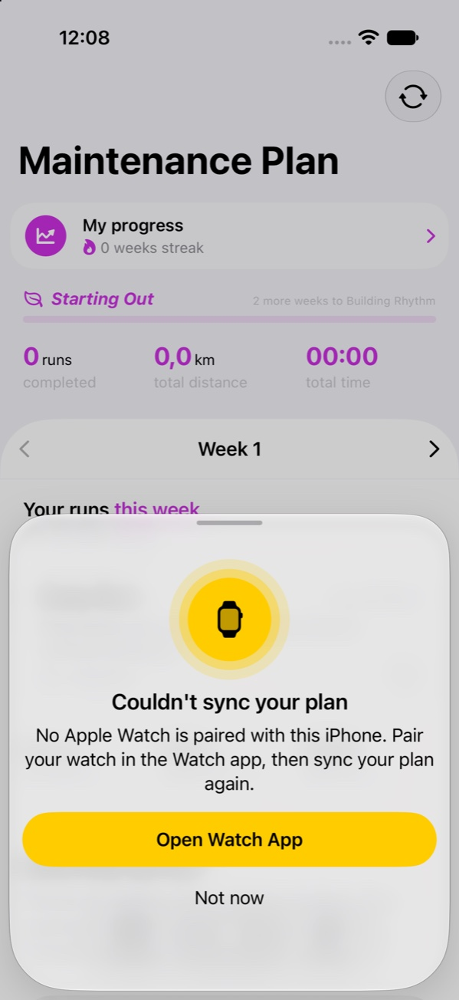

Four out of five never reach the watch
RunPlan's funnel looked healthy until I lined up the events and saw that most people who build a plan never start it on the Apple Watch. I found out why and rebuilt the hand-off.
Overview
RunPlan is watch-first: you build the plan on the iPhone and run it on the Apple Watch. In November 2026 I went through our analytics to see where we lose people. Onboarding was fine, and the drop-off turned out to be in the hand-off between the two devices, partly because our own interface was telling people something that wasn't true.
Firebase Analytics. Funnel: 90 days to 17 November 2026. Watch states: the last 28 of those days.
The signal
By autumn the first-run flow looked healthy: almost everyone finished onboarding and built a plan. So I lined up five events for the last 90 days, from the first open to a finished run.
From first open to a finished run
People, 20 August – 17 November 2026
On the iPhone
- Opened the app1,043100%
- Finished onboarding1,00396%
- Created a plan96693%
On the Apple Watch four out of five drop out here
- Started a workout20620%
- Finished a workout16015%
Firebase Analytics. Unique people per event in the same 90 days, not a strict cohort, so read the bars as proportions.
Of the people who open the app, 93% build a plan, but only 21% of those go on to start a workout on the watch. In a watch-first app the run on the watch is the product, and everything I had polished so far was on the healthy side of that gap.
The cause
Because funnels only show where people drop off, I had added a single property to our analytics back in August to check the user's Apple Watch status: RunPlan installed, watch paired without the app, or no watch. It took four weeks of data to find the bottleneck.
Apple Watch status
Share of active users, 21 October – 17 November 2026
- RunPlan is on the watch 55%
- Apple Watch paired, but RunPlan isn't installed on it 22%
- No Apple Watch paired 22%
Firebase Analytics. The middle group is the one a better interface can win back.
The people in the middle group own an Apple Watch, and 75% of them built a plan even though RunPlan wasn't on it. While iOS typically installs the companion app automatically, sometimes it doesn't, and there's no warning on the phone. Over those four weeks, 36% of users with the watch app started a workout, compared to just 1% without it.
What the app was telling them
So I looked at what these users were actually seeing on screen, and found two problems:
- A dismissible launch prompt. My co-founder added a sheet in July explaining how to install the watch app, shown at most once a day. If you swiped it away to get to your plan, it never showed up anywhere else.
- A sync button that always said yes. The "Sync with Apple Watch" button on the plan screen spun for two seconds and returned "Synced with Watch" every single time — even when there was nothing there to receive the plan. In the middle group, 48% tapped it and were told it worked.
At the one moment a runner checked if their plan made it to the watch, the app straight-up lied to them. Nobody had designed the failure state, so success was the only answer the button had.
The redesign
The rule I set for the fix was simple: a status message is a claim, so the app is only allowed to say what it actually checked. Once the spinner stops, the button now reads the real state of the watch — and each state gets its own answer.
| What the phone sees | Before | Now |
|---|---|---|
| RunPlan is on the watch | "Synced with Watch" | "Synced with Watch", and the plan really is there. |
| Watch paired, RunPlan not on it | "Synced with Watch", which wasn't true | A sheet titled "Couldn't sync your plan": how to install RunPlan from the Watch app, with an "Open Watch App" button. |
| No watch paired | "Synced with Watch", which wasn't true | The same sheet, saying that no Apple Watch is paired and how to pair one. |
| Can't tell yet | "Synced with Watch" | The spinner stops and the app claims nothing. |
One sheet, three entry points
We already had the setup sheet, so I just added more entry points and made the title context-aware. At launch, it still says "Set up your Apple Watch". When triggered from a sync tap, it says "Couldn't sync your plan" — because that directly answers what the runner just asked.


The sheet as shipped, in the iPhone simulator. Left: the July prompt with its install steps. Right: the new title and the new no-watch message. After a sync tap with a watch that has no RunPlan, the sheet shows the install steps under the title "Couldn't sync your plan".
- You can get back to it later. The Apple Watch row in Settings now reads "App not installed" or "No watch paired" and opens the same sheet.
- The plan syncs on its own. Before, a plan sent to a watch without RunPlan went nowhere and just waited for the next edit. Now the phone sends the active plan as soon as RunPlan shows up on the watch.
I designed the flow, wrote the two new messages and built it in SwiftUI. It's live in all nine of the app's languages, and I tested it on an iPhone with an Apple Watch before it shipped.
How we will know
The fix ships with its own tracking: two new events log every time the sheet appears and every tap on "Open Watch App", each with its entry point (launch, sync or Settings) and its reason (no app or no watch). Once the fix has been live for four weeks, I'll read three numbers:
| What I'll read | Today | Source |
|---|---|---|
| People who see the sheet and tap "Open Watch App" | No baseline, the events are new | watch_setup_shown watch_setup_open_tapped |
| Active users with a watch but no RunPlan on it | 22% | Watch state, four weeks |
| Plan creators who start a workout on the watch | 21%, 206 of 966 | Funnel, 90 days |
Status: no result yet
The fix shipped on 24 November 2026, so there's nothing to report yet. Once it's been live for four weeks, I'll read the three numbers above.
One question is still open: what to do about the 22% with no Apple Watch at all. We could say earlier and more clearly that RunPlan needs one, or give them a way to run from the phone, and we haven't decided yet.
The same pass through the data also turned up a quieter bug: our App Store rating prompt hadn't appeared once in 90 days, even though runners were finishing workouts on the watch the whole time. It only counted runs it had marked complete itself, while a watch run arrives already complete, and the fix for that went out in the same release.
What I learned
- Healthy onboarding numbers weren't the whole funnel. The 93% who create a plan told me onboarding worked, but that number said nothing about the one step everything else depends on, which is getting RunPlan onto the watch.
- A success message needs a failure state too. The sync button said "Synced with Watch" even when the sync had failed, simply because nobody had designed what it should say instead, so I now work out the failure states before the success state.
- The hand-off between devices needs an owner. It has no canvas in Figma, so it had been nobody's job, and now it's designed, worded and measured like any other screen.